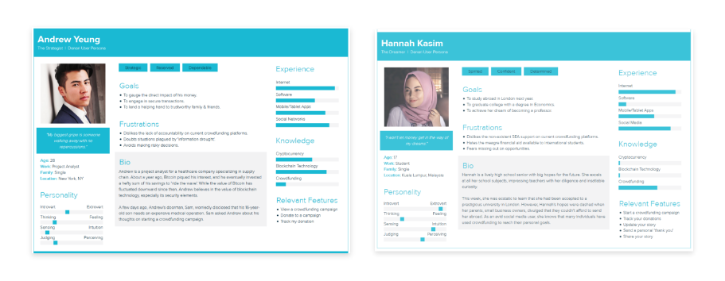
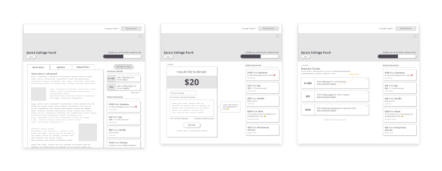
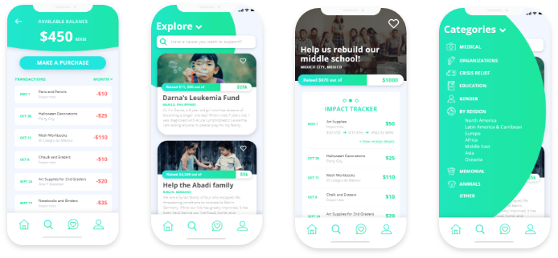

KindTrust is a decentralized crowdfunding platform built using a Solidity smart contract that is deployed on the Ethereum blockchain. Users can analyze, donate to, and rate crowdfunding projects. Organizations can create projects and transfer donated funds to registered suppliers. Everything is decentralized, which produces five major benefits over traditional crowdfunding platforms.
On the backend there is a Solidity smart contract that maintains state for organizations, crowdfunding projects, suppliers, purchases, donors, and the platform itself (e.g. total money donated). Images and long descriptions are stored on IPFS, and their corresponding hashes are stored in the blockchain.
The frontend consists of mobile apps that integrate with the backend via web3 and IPFS.
Concepting
Kindtrust was created to address current problems in the crowdfunding space, as well as act complentary to government and nonprofit aid. It is a platform, as well as a vehicle to change how the world gives and receives. Our value proposition is as follows:
User Personas
An interview of 20 individuals, both donors and campaign-starters, was conducted to collect data about sentiments concerning crowdfunding. Example questions were as such:
Through this information, several user personas were constructed to emobody the key motivations of individuals who have used crowdfunding platforms. Most donors noted the lack of transparency on current platforms with no tools to ensure accountability. Others were shut out completely by the lack of accessibility to crowdfunding as most platforms only operate in ~14 Western countries. Most importantly, users' main motivation was 'ownership', whether they were a donor or campaign-starter. Donors wanted to see the direct impact of their money, and campaign-starters desired immediate relief in time-sensitive situations. 
User Scenario Map for Demo
For World Virtual Govhack, a user scenario map was created to outline the steps that best exemplify Kindtrust's value proposition.
Wireframes
From there, wireframes were constructed to not only lay the baseline for our platform, but also generate new features and better UI for the crowdfunding experience. While wireframes were initially created for desktops, we later decided to showcase our demo on a phone to display the accessibility and real-time application of Kindtrust.
Mockups & Prototyping
Finally, mockups and a working prototype were created to help our users truly visualize the experience of Kindtrust. This prototype was intended for smartphones, but we understand that not everyone in need has access to technology. By creating a browser platform in conjunction to an SMS app, we believe we can reach areas that are already employing mobile banking despite other technological barriers, i.e. Nigeria, South Africa, Kenya, etc.
